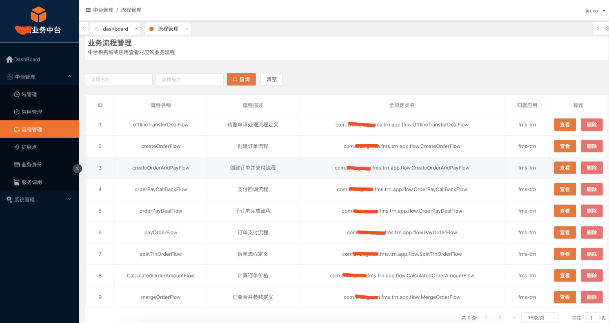

前言
从2018年开始，“中台”成为风靡IT技术圈的热词，每个人对中台的理解就像一千个观众眼中有一千个哈姆雷特一样。本文将从可落地的角度，分享如何打造业务中台发动机，帮助大家快速落地业务中台。仁者见仁,智者见智，欢迎大家拍砖。
业务中台发动机的目标很简单，就是打造一个光环(Halo),给普通业务应用带上去，变为带有光环的中台应用，形成可复用的业务资产，快速响应业务，进行赋能。
1. 什么是业务中台
业务中台其实就是按照业务域划分，把业务代码做成可复用的业务资产组件库，快速响应业务。
1.1 哪些公司适合做业务中台
业务中台搭建最终是为了形成可复用的业务资产，形成业务组件库。如果公司的业务线单一(业务形态单一)，产品单一，对接的渠道单一，不建议做业务中台。可以按业务域划分，做服务化。
国内一线或二线等互联网公司，中大型企业，或者业务复杂，多产品线，多业务形态等公司，适合做业务中台。
1.2 建设业务中台原则
业务与业务隔离 各业务线和业务形态，必须隔离，不能相互影响，形成可自治的业务空间，可以通过包隔离或应用隔离。
业务与平台隔离 某个业务或业务形态需要与平台隔离，当某个业务停滞，或者由于效益不好砍掉，或者业务的演变开发不能影响整个平台的稳定性。比如在线教育平台，不能让某个业务线生命周期，影响整个在线教育平台的稳定性。
业务资产可视化 业务中台建设，必须业务资产可式化，业务域可视化，应用内部流程可视化，扩展点和插件可视化，全链路业务身份可视化，代码能力即中台能力。说直白一点就是，业务代码可视化，帮助你了解有多少业务资产，有多少业务线，有多少中台能力，有多少域服务，有多少域能力，哪些可以复用，编排，拖拽下发快速响应业务需求。
全局业务身份 平台需要能有按“业务身份”进行业务与业务之间逻辑隔离的能力
1.3 打造业务中台条件
业务中台的打造需要天时，地利，人和。
天时就是公司适合做业务中台,目前的业务应用无法满足快速响应业务方的需求(换句话就是说需要重构,不然很难做业务中台)，地利就是公司组织架构，自上而下支持。人和是有业务架构+中台应用架构的人才，从而组建中台团队。没有业务架构+中台应用架构合适的人才，那业务域怎么划分，业务模型是什么样的，比如商品模型怎么设计(SPU和SKU的怎么设计满足扩展需求，更加合理。业务域划分清楚之后，架构分层设计，各种防腐设计，以及架构演变进化，通过应用架构将业务架构和技术架构无缝衔接，从而打造出中台应用发动机。
打造业务中台，必须先打造业务中台发动机。
2.为什么要打造业务中台发动机
一辆好的汽车，或者好的航空母舰都具有一个非常强大的发动机，只有给业务应用装上中台发动机才能变为中台应用，逐渐在架构治理和代码防腐之中演变为真正意义的业务中台。
业务中台的建设落地除了需要科学的方法论之外，还需要将方法论落地变为中台应用框架和配套的基础设施，从而规范业务中台应用的创建规范，中台应用架构规范，中台应用演变进化规范。
3. 如何打造业务中台发动机
打造业务中台发动机，需要考虑以下几点:
中台框架，必须是应用框架+技术架构和中间，需要由具备应用架构和基础架构的人参与打造,让中台开发工程师专注于业务组件库开发。
应用框架必须整合领域驱动设计，开发出可落地的工具支撑(代码生成器或IDE插件)。只有领域驱动才可以实现业务与业务之间隔离。只有工具支撑才能保证整个业务中台建设的质量和交付的治理，从而衡量整个中台建设的成熟度。
业务中台发动机需包含中台可视化管控，进行全方位的可视化视角管控。
4.中台应用框架
4.1 中台框架设计
Halo(内部代号，中文含义:光环)的主要设计思想是流程组合节点,节点调用域服务,域服务可以调用若干域能力,域能力下若干个业务扩展。具体如下:
可编排场景:一切业务请求皆为命令，命令执行器中启动业务流程，业务流程组合节点,节点调用域服务,域服务可以调用若干域能力。流程，节点，域服务，域能力都可以出现多个业务扩展，由业务身份路由或决策出业务身份执行。
不编排场景:一切业务请求皆为命令,命令执行器中，调用域服务，域服务调用域能力。域服务，域能力都可以出现多个业务扩展，由业务身份路由或决策出业务身份执行。
整个业务活动链路统一业务身份：业务请求按照“业务身份”进行路由处理，从而路由到对应的DDD领域模型中，从而实现业务与业务的隔离，各业务线之间的隔离。
管理域与运行域分离： 业务逻辑不能依靠运行期动态计算，当业务身份进行冲突时，可以通过类似的策略中心进行决策，返回对应的业务身份处理。
Halo框架，未来将根据实际情况实现业务包与平台分离的插件化架构, 所谓插件化架构，也就是业务中台提供插件包注册与发现机制，业务方根据扩展点开发对应的插件包注册到业务中台平台。通过容器化加载和实现，最终实现业务和平台的隔离。
4.2 DDD应用于中台框架
根据领域驱动设计思想，自定义注解 @Entity(实体)，@Factory(工厂), @DomainService(领域服务), @ValueObject(值对象)，@DomainRepository(资源库)，@DomainAbility(域能力) 等进行战术设计，落地DDD，实现业务与业务隔离。
4.3 扩展点思想引入
Halo框架引入扩展点设计思想，所谓扩展点就是接口，扩展就是接口的多种实现，可以理解为基于注解的动态策略模式，而Halo框架扩展点的执行,需要根据业务身份路由到对应的扩展点实现.因此需要提取业务身份。
4.4 应用内部流程编排引入
当中台应用中没有流程编排的时候，会出现以下问题：
代码复用方式千奇百怪，无统一标准。
模块划分无章可循。
应用日趋复杂
流程变更过程冗繁。
因为没有流程编排会出现如上的问题，因此组件化需求产生，将代码形成可复用的代码资产。因此Halo框架基于注解的方式定义的一套组件的开发方式和复用方式。由于内容比较多这里将不再展开。
最终实现的组件化需求,形成一套简单的复用标准，一个简单的模块划分标准。从而多么复杂多变的业务都可轻松应对，使代码更加轻量、敏捷、易用。
5.中台代码生成器
中台代码生成器的目标就是快速创建中台应用，解决开发效率，规范中台研发。其中内置中台应用框架的分层设计和中台应用基础设施等。 中台代码代码生成器分为服务端和客户端。
服务端主要根据前端请求提交的参数，代码生成器引擎去生成代码。
客户端主要分为网页端和IDEA插件端，用于跟用户交互。
6. 中台IDEA插件
中台IDEA插件(内部代号:Halo Tools)主要有中台应用向导式创建功能，右键创建13个Java类功能，以及行标记和中台可视化联动功能，以及插件设置功能。
6.1 向导式创建功能
根据向导方式，快速创建中台应用。
6.2 @Domain行标记修改
Halo框架所创建的应用需要管中台可视化纳管，因此当应用启动的时候会判断当前应用是否属于某个域，不属于某个域将停止启动，HaloTools提供一个快速修改编辑的功能。如下图所示:

6.4 Halo Tools增强右键
Halo Tools提供右键增强功能，帮助开发快速创建常用的Java类，提高开发效率。如下图所示:
7. 中台可视化管控
Halo Framework对应的中台可视化管控平台，主要包括业务中台域管理，应用管理,业务流程可视化，业务身份管理等
业务中台DashBoard如下图所示,包括中台建设成熟模型等。
7.1 业务中台成熟度模型
业务中台建设的成熟度，目前在业界没有具体的衡量标准。Halo框架提供一个衡量标准。如下图所示，用雷达图的方式进行衡量。雷达图面积越大，说明业务中台建设越成熟。
7.2 业务流程可视化
业务中台应用按域划分之后，由一堆应用组成，提供域服务和域能力。其中域服务和域能力或扩展点等形成业务组件库，可以由领域驱动中的应用层进行编排复用，当应用启动之后，收集到中台的业务流程如下所示:

8.总结与展望
本文主要介绍如何打造业务中台发动，至于更多的设计和落地细节，后面将会写相关的文章进行分享。